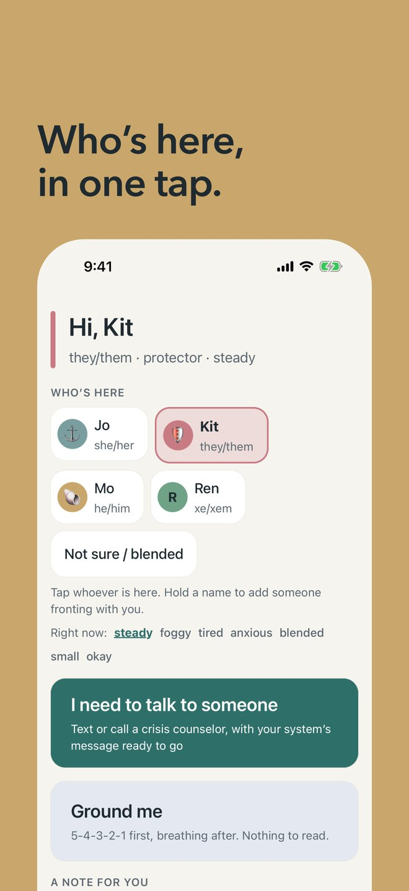
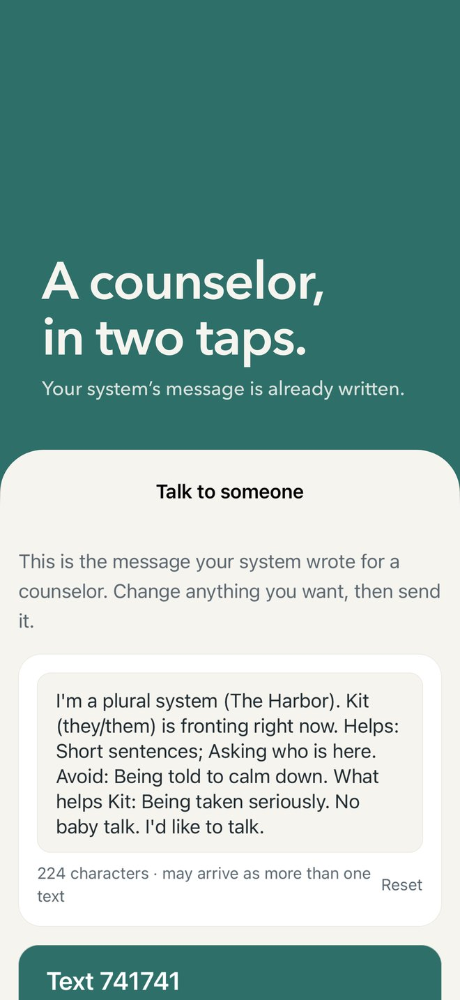
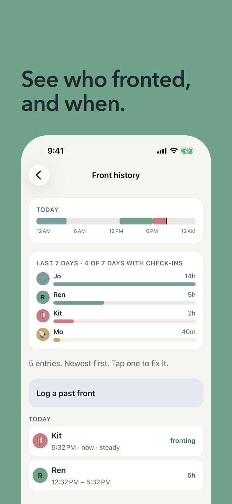
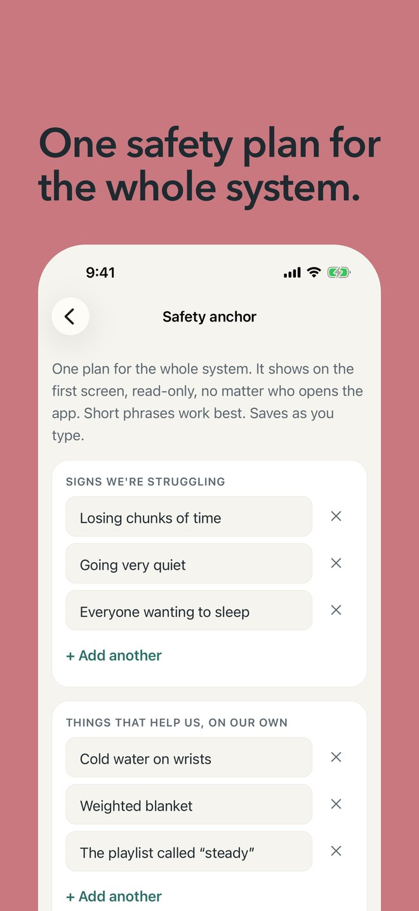
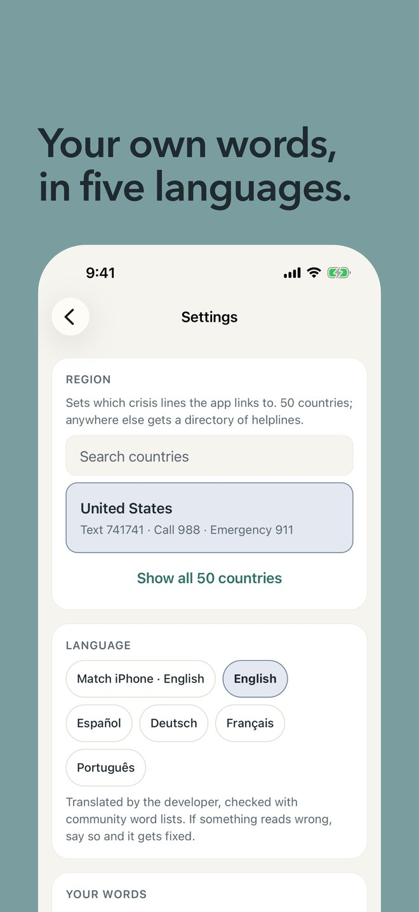
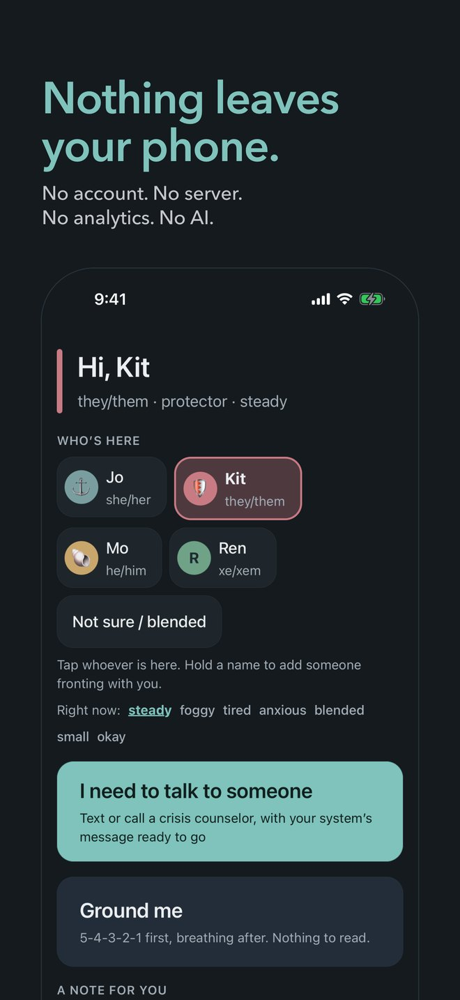

A quiet place for your system.
Who’s here, in one tap.
A crisis counselor in two taps, with a message your system wrote ahead of time.
Nothing leaves your phone.
Anchor is an iPhone app for plural systems. It is in testing now and is coming to the App Store. It is free.






What it does
- Who’s here
- Tap whoever is fronting, or hold a name to add someone co-fronting. The app remembers who fronted when, so you can look back later. A home-screen widget shows it at a glance.
- Help in two taps
- “I need to talk to someone” opens the text and call lines for where you are, in 50 countries, with a message your system wrote ahead of time, so you don’t have to explain everything while it’s hard. You decide whether to send it. The button is always in the same place.
- Made for plural systems
- Your own words for members. Profiles with pronouns, roles, colors, photos and what helps. Notes between members. A shared safety plan, a journal, polls and grounding exercises. Check-in reminders that never name anyone.
- Bring your system with you
- Import from Simply Plural, PluralKit, Octocon, Ampersand, Plural Star and Plural Log. Export everything as a file whenever you like.
- Yours to read
- English, Spanish, German, French and Brazilian Portuguese. Large type, VoiceOver, high contrast and a dyslexia-friendly font.
What it promises
- No account.You never sign up or sign in.
- No server.Everything stays on your phone and in your own phone backups.
- No analytics.Nothing counts what you do.
- No AI in the app.Nothing reads, scores or decides anything about you.
- Free.No subscription and nothing to unlock.
- Honest about how it was made.Built by one person with AI-assisted coding tools.
The details are in the privacy policy. Help with the app is on the support page.